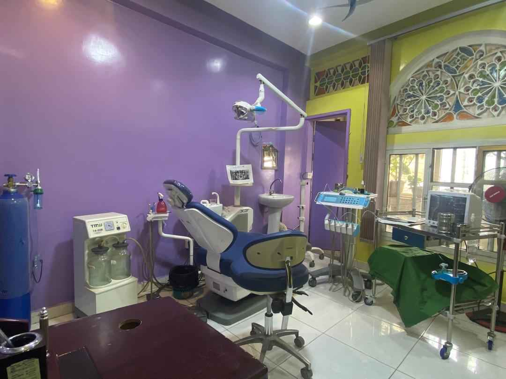

مركز الدكتور نشوان عبد الوهاب الخولاني
لطب الأسنان وجراحة الفم والوجه والفكين
لطب الأسنان وجراحة الفم والوجه والفكين
🏥 رعاية سنية شاملة وتخصص جراحي دقيق في مركز واحد
نجمع في مركزنا بين عراقة الخبرة السريرية في طب الأسنان العام والتجميلي الممتدة منذ عام 2005، وبين أحدث ما توصلت إليه التكنولوجيا الرقمية في تخصص جراحة الفم والوجه والفكين والزراعة الموجهة بالكمبيوتر. نوفر حلولاً متكاملة لكل أفراد العائلة إلى جانب المعالجات المعقدة لضمور العظام الحاد.

بدأت المسيرة الطبية الحافلة للدكتور نشوان عبد الوهاب الخولاني في عام 2005 ممارساً عاماً لطب وجراحة الأسنان والتركيبات التجميلية، حيث نجح على مدار سنوات طويلة في بناء قاعدة من الثقة والخبرة الشاملة مع آلاف المرضى وأسرهم.
ولتقديم حلول أكثر عمقاً وأماناً وتلبيةً للتطورات العالمية، صقل خبرته الطويلة بالانتقال إلى التخصص الدقيق والأكاديمي في جراحة الفم والوجه والفكين وزراعة الأسنان المتقدمة والأنظمة الرقمية ثلاثية الأبعاد، ليصبح مركزنا اليوم واحداً من المراكز الرائدة التي تقصدها أصعب الحالات الجراحية وضمور العظام المستعصية في اليمن.
اقرأ السيرة المهنية الكاملة للدكتور ←بجانب منظومة الرعاية السنية الشاملة لجميع أفراد الأسرة، ينفرد المركز بتقديم جراحات تخصصية متطورة تدار بأعلى مستويات الكفاءة العلمية والتقنية في اليمن.
تصميم وطباعة الغرسات ثلاثية الأبعاد تحت السمحاق (3D Subperiosteal Implants) التفصيلية والزراعات الوجنية الالتفافية لتوفير حلول فورية دائمة وثابتة للمرضى الذين يعانون من تراجع حاد في عظام الفكين دون الحاجة لعمليات رقع وتطعيم عظمي طويلة.
الدمج الكامل بين تقنيات الأشعة المقطعية المخروطية CBCT والتخطيط الافتراضي المسبق لصناعة أدلة جراحية ذكية، تتيح وضع الغرسات السويسرية والألمانية الفاخرة بدقة متناهية وبأقل تدخل جراحي وبدون ألم.
علاج وإصلاح كسور الفكين والوجه الناتجة عن الإصابات والحوادث، استئصال الأكياس والآفات العظمية الفكية، والخلع الجراحي الدقيق لأضراس العقل المنطمرة والمعقدة تشريحياً مع حماية كاملة ومطلقة للأعصاب والتروية الدموية.
مقالات علمية مبسطة بقلم الدكتور نشوان لنشر الوعي الصحي الصحيح وتسليط الضوء على أحدث التقنيات الرقمية العالمية.
يرحب بكم مركز الدكتور نشوان الخولاني لطب الأسنان وجراحة الفكين في مدينة إب، ويقدم رعاية طبية سنية شاملة وتخصصية وفق أعلى المعايير العالمية.
نستقبلكم لتشخيص وتصميم خططكم العلاجية والجراحية طوال أيام الأسبوع (عدا الجمعة). لضمان عدم الانتظار وتوفير وقت كافٍ للفحص الرقمي ثلاثي الأبعاد، يرجى التنسيق والحجز المسبق عبر الضغط على الرابط بالأسفل.
📋 الانتقال لصفحة الحجز وبوابة الاتصال